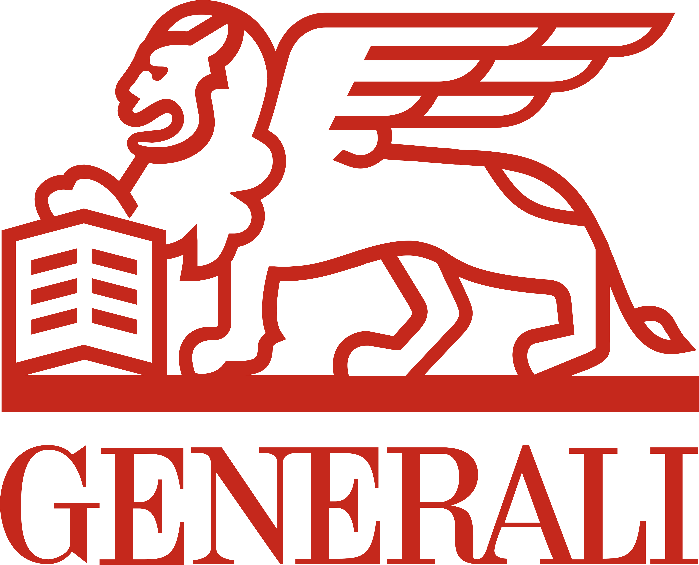

Process ownership
Defined and maintained QA workflows, test planning, execution, reporting and defect management.
CASE STUDY 01 · QA OWNERSHIP

From a single tester to a scalable QA process across Web and Mobile.
At Generali, I was the only Test Engineer for an extended period. I took ownership of the QA process from the ground up, then helped scale the team as the product and international scope grew.

THE CHALLENGE
The product landscape included Web and Mobile experiences, with the first eight months focused on Alleanza Assicurazioni and the later phase covering Generali international markets including Poland, Slovenia, Switzerland, Austria and others.
I established test planning, documentation, test book templates, defect management and repeatable QA workflows, while collaborating with UX, Front-End, BFF and analysis teams.
SELECTED PRODUCT WORK


Defined and maintained QA workflows, test planning, execution, reporting and defect management.
Covered E2E, integration, regression, smoke, accessibility and manual API testing.
After working as the only Test Engineer until October 2025, I onboarded three additional colleagues as the team expanded.
Worked with Selenium, Appium, Cucumber and Rest Assured in Java, alongside Sauce Labs and physical devices.
The strongest result was not a single test cycle. It was creating a repeatable QA foundation that could support products, markets and a growing team.